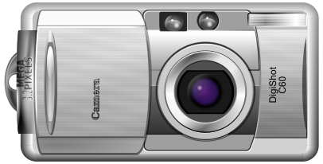

Svg.Skia loads SVG 1.1 and Android VectorDrawable content, builds a reusable picture model, and turns it into SKPicture output, Avalonia visuals, generated C# code, and conversion artifacts.

The core renderer that loads markup, builds a picture model, and emits SKPicture output.
Two Avalonia stacks: a Skia-backed renderer and a pure Avalonia picture pipeline.
Generated CodeCompile SVG assets into C# or source-generated pictures for static assets and AOT-friendly workflows.
Editor PackagesReusable editor state, SVG mutation services, Avalonia panels, and a full interactive workspace extracted from AvalonDraw.
ToolingBatch-convert SVG and VectorDrawable input into png, jpg, webp, pdf, xps, or raw generated code.
Install packages, pick the right stack, and render your first SVG in code or XAML.
ConceptsUnderstand the package layout, asset pipeline, picture model, and rebuild workflow.
EditorEmbed the extracted AvalonDraw editor packages as a full workspace or as lower-level reusable components.
GuidesFollow focused walkthroughs for rendering, exporting, hit testing, conversion, and code generation.
XAML UsageWire up Svg, SvgImage, SvgResource, and SKPictureImage in Avalonia.
Review VectorDrawable support, trimming and NativeAOT notes, repository tests, and packaging expectations.
ReferencePackage maps, sample inventory, generated API coverage, licensing, and the Lunet docs pipeline.
API DocumentationBrowse generated API pages for the renderer, Avalonia packages, picture model, and source-generator assemblies.
SKSvg example first.Svg.Editor.* package stack.